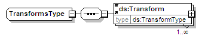

complexType
TransformsType
diagram

namespace
http://www.w3.org/2000/09/xmldsig#
children
ds:Transform
used by
elements
RetrievalMethodType/Transforms
Transforms
source
<
xs:complexType
name
=
"TransformsType
">
<
xs:sequence
>
<
xs:element
ref
=
"ds:Transform
"
maxOccurs
=
"unbounded
"/>
</
xs:sequence
>
</
xs:complexType
>
XML Schema documentation generated by
XMLSpy
Schema Editor
http://www.altova.com/xmlspy